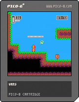
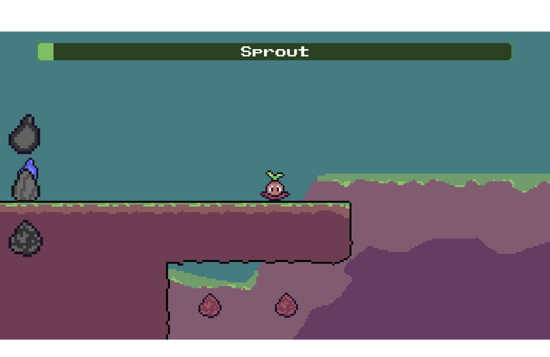
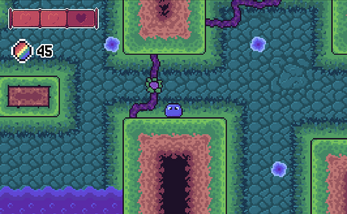

Al Gore

After my time in Colorado was over, I needed to entertain myself for the month or so I had left before I returned to Boston. I turned to Pico-8, a fantasy console for people interested in game development. Its conceit is to severely restrict the tools and space you have to create the game. I admit I was drawn primarily by the challenge of making sprites that were still readable and appealing, despite their tiny size and limited color palette. I also thought it would be neat to pick up Lua, which is the console's chosen language.
Pico-8 is very insistent that you do everything yourself. For example, I wrote a collision system from scratch based on this tutorial series. There is no such system by default in Pico-8; all you get are functions for initializing the game, performing physics updates, and drawing sprites. Godot has a lot of high-level tools to keep the focus on design, but I find that approach less fun to work with.
Working at such a low level is very appealing to me. I enjoyed writing everything myself. It was a good chance to practice planning and organizing my work intelligently. The inherently limited scope any Pico-8 game must adopt helped keep me focused.
If you want to play the game, I encourage you to look at Pico-8's default control scheme first.
Pico-8 files can be exported as PNGs. You can play one by visiting this site (or the app if you have it), pressing the play button, dropping the image into the interface, typing "run", and pressing enter/return. If you press the escape key twice, you can look at the editor, where all the code, art, and sound effects can be viewed and modified.
All the art, sound effects, and code are my own. I based the collision system and player movement on the tutorial series by Nerdy Teachers.

The Sodfather (2025 GMTK Game Jam)
Having just completed our first years as computer science majors, my friend and I decided to participate in a game jam over the summer. For the uninitiated, game jams are hackathons, but for making video games.
The theme was "loop." We came up with the idea to make a plant-themed puzzle-platformer where the player's moveset cycled on a fixed timer. The goal is to collect enough water and nutrients to germinate a new sprout (thereby staying alive) before your character becomes an immobile platform.
It was exciting to work with him to meet a tight deadline in such a high-pressure environment. The game jam was a test of my CS bona fides after a full year in the major.
We split code, art, and level design responsibilities roughly evenly.

Arbitrary Button Game
I started this project as a way to learn the Godot game engine in time for the game jam later that summer. I continued working on it well into the first semester of my sophomore year.
I wanted to make a "metroidvania," a genre of exploration game in which progress is continuously blocked by a series of locks and keys scattered throughout the map. For example, to progress in my game, you need to gain a "dash" ability to access new areas.
The scale of the project was very ambitious at the time, so its development provided as many organizational hurdles as it did technical challenges. Given the "learn by doing" approach I took to the game, thoughtful planning & organization were conspicuously absent during many parts of development. I paid for it by having to constantly update systems I designed with narrow ends in mind. I spent a lot of time squinting at old code instead of making new features and map areas.
Scope creep became an issue as well. I became much less thoughtful about level design as time went on, prioritizing quantity over quality.
The code and art are my own work. I tried using an LLM a couple times when I was struggling to understand a bug or a feature of Godot. However, without the full context of the project, and especially given the short-sightedness of my development approach, the chatbot couldn't expand on anything I did without causing problems down the line.
Since I finished the game, I've become more intentional about my approach to large projects.